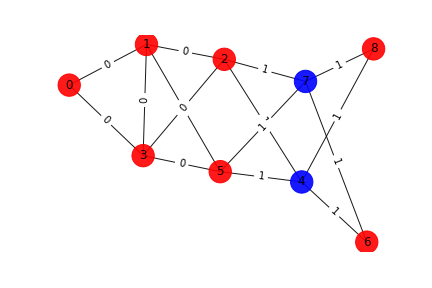

Graph

Number of words associated with this graph: 108
Interlace Polynomial
Polynomial: Poly(4*x**5 + 8*x**4 + 22*x**3 + 18*x**2 + 4*x, x, domain='ZZ')
Roots: [-0.5 +2.00388733j -0.5 -2.00388733j -0.62475751+0.j
Interlace Polynomial Two Var
Polynomial: Poly(x**4*y**5 + 9*x**4*y**4 + 34*x**4*y**3 + 70*x**4*y**2 + 80*x**4*y + 40*x**4 + 2*x**2*y**5 + 14*x**2*y**4 + 45*x**2*y**3 + 81*x**2*y**2 + 69*x**2*y + 15*x**2 + y**5 + 5*y**4 + 15*y**3 + 21*y**2 + 9*y + 1, x, y, domain='ZZ')
Coefficients heat map: